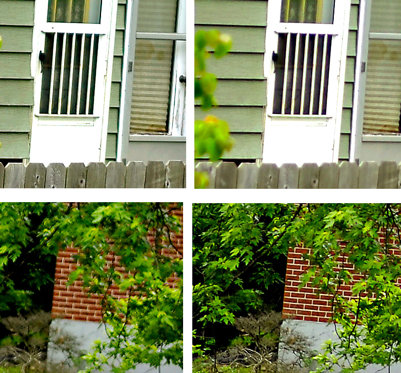
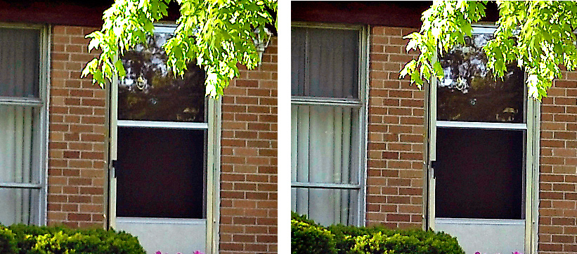

This test clearly indicates that in order to obtain the best focus across the field with my copy of the 17-55 mm lens, one must manually adjusted the focus if a compromise between center and edge sharpness is desired. (My guess would be that this is true for most Nikkor 17-55mm lenses.) Of course, when the lens is stopped down some of this effect is mitigated. But then another problem creeps in, residual spherical aberration.
When my 17-55 is stopped down the focus is shifted to the front, giving rise to the appearance of front focus. Here is a case where results can be improved with one of the newer cameras such as the Nikon D3, which allows one to make focus corrections for specific lenses. Of course, this will only give the best results at one specific aperture. For critical results with stationary subjects, nothing will beat using manual bracket focusing.
The images below show the effect of focus shift due to spherical aberration. These images were shot at 35mm and show the effect of stopping the lens down to F4. Interestingly, stopping down the lens further does not result in much additional shift of focus.
|
Manual focus correction
|
||||||||||
|
photographs by bernard
Checking Auto focus and field Curvature |
||||||||||
| How to Pages | ||||||||||
|  | ||||||||||
|  | ||||||||||
I was first concerned that the auto focus on the lens or on my camera was off. Other lenses, such as a 105mm f2.8 Nikkor macro lens and a 35-70 Nikkor F2.8 zoom lens seemed to focus properly on my Nikon D2x but had slight back focus on my D100 (focusing at distance slightly behind the subject). On the other hand, auto focus with the 17-55 usually resulted in front focus with both cameras, though less so on the D100.
I subsequently adjusted the adjusted my D100 to eliminate the back focus. I then proceeded to carefully test the 17-55 at 17mm, 35mm, and 55mm by first using the auto focus and then manually adjusting the focus for slightly increasing distances. Doing this I discovered some interesting facts about the lens. The four images below (shown at 100%) were taken at 55mm, F2.8. The left shows the results using the center auto focus point set on the door in the center of the frame. The images on the right show the results after focusing manually for the best results at the edge of the frame. The top images show the center of the frame and the bottom images show the far right.